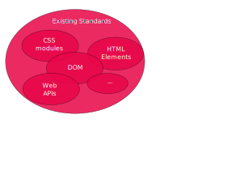
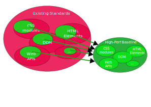
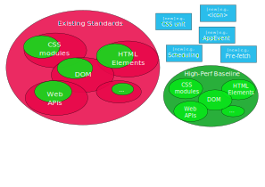

Leaving slide mode.
Technical Roadmap Discussion: High-Performance Baseline for Web Applications
Martin Alvarez-Espinar
Web 进化论
WebAI 与高性能 Web 应用技术研讨会
10 Jan 2025
Contents
- Challenges and opportunities
- A standard baseline for High Performance?
- Proposal and discussion
Need for improvement in WebView-based apps and Web Apps
- Portability. Different capabilities of WebViews (native APIs, UI...)
- Performance. Hybrid content, pre-fetching, caching...
- DevX. Different frameworks, languages, APIs...
- Web is king! The only one... Universal, private, accessible, for all...
Contents
- Challenges and opportunities
- A standard baseline for High Performance?
- Proposal and discussion
Web standards
Stable, accessible, private, secure, interoperable.

Profiles based on standards
Remove deprecated parts, add only the relevant ones for the use cases.

High-Performance baseline
Definition of High-Performance profiles for specific standards.

Innovative enhancements?
New HTML elements, DOM events, or new specs

Liaisons with other WGs
Raise opportunities in WGs, incubate in WICG.

Also part of the baseline
Guarantee: interoperability, accessibility, privacy, security...

Contents
- Challenges and opportunities
- A standard baseline for High Performance?
- Proposal and discussion
How we could start?
Launch
- Multi-stakeholder forum (i.e., WebViews, Hybrid-App Frameworks, JS Engines...)
- Use case collection that justifies need
- Alignment with other groups (e.g., WebViews CG, WinterCG)
- Charter: inclusive, with specific goals and timeline
Incubation
- Specs supported by early implementations, benchmark?
- Async (public) communication (e.g., GitHub, WeChat...)
- Regular alignment with community (TPAC breakouts)
Standardization
Open discussion
- What is a High-Performance Baseline?
- More than the standard subsets?
- Do we have enough use cases?
- Will we fragment the web? -hopefully not 😊
Thank you!
Martin Alvarez-Espinar - Huawei
WinterCG's Minimum Common API
The Minimum Common Web Platform API is a curated subset of standardized Web Platform APIs intended to define a minimum set of capabilities common to Browser and Non-Browser JavaScript-based runtime environments.
Minimum Common API Draft Community Group Report
To start the slide show, press ‘A’. Return to the index with ‘A’ or ‘Esc’. On a touch screen, use a 3-finger touch. Double click to open a specific slide. In slide mode, press ‘?’ (question mark) to get a list of available commands.